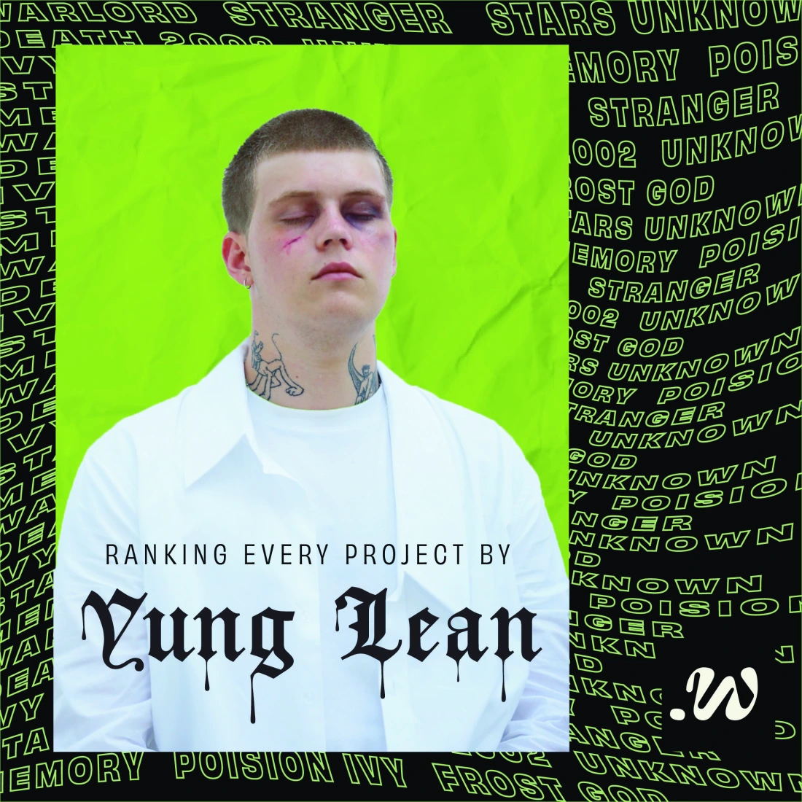
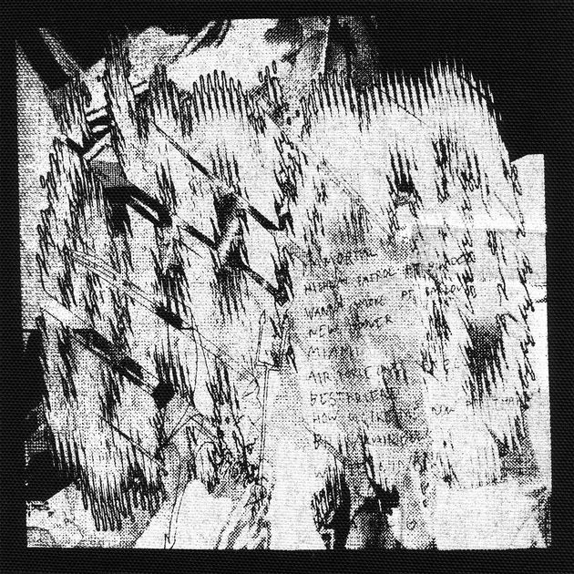
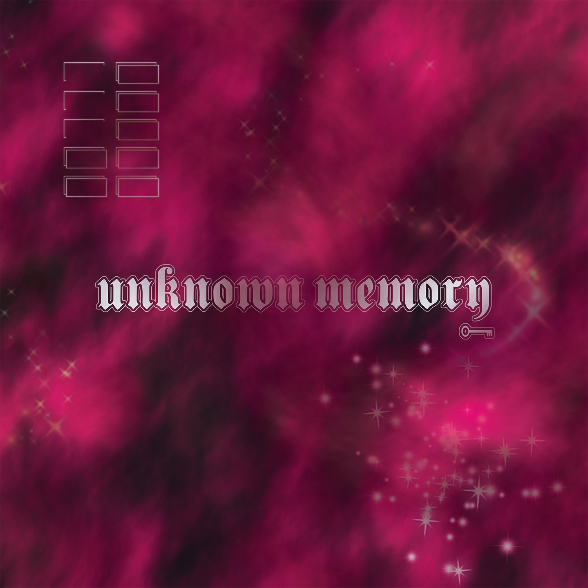

| Title | Year | Rating |
| Starz | 2020 | 4.5 |
| Warlord | 2016 | 4.8 |
| Poison Ivy | 2018 | 4.3 |
September 17, 2022 Music, Opinion
Ranked: Yung Lean
Swedish artist Jonatan Leandoer, otherwise known to listeners as Yung Lean, is certainly a polarizing figure amongst music fans. It’s a difficult task to put Lean in a box. His projects typically feature dreary vocals supported by backgrounds of sometimes metallic grunge, and other times dreamlike concoctions.
Despite what your stance might be regarding Lean’s sound, there is no doubt that many contemporaries have drawn upon him as an influence, either directly or indirectly. With the release of the 25 year old’s most recent mixtape, Stardust (which will remain unranked for now), let’s take a closer look at Lean’s entire discography and attempt to rank his projects from worst to best.
Warlord (2016)

In short, Warlord is unhinged. This album was
produced in the midst of manic hallucinations
and spells of chaos that eventually sent Lean to
the mental hospital. That energy manifests itself
into a unbelievably raw musical experience.
In short, Warlord is unhinged. This album was
produced in the midst of manic hallucinations
and spells of chaos that eventually sent Lean to
the mental hospital. That energy manifests itself
into a unbelievably raw musical experience.
Despite the chaotic energy that is prevalent on
the album, Warlord maintains balance. The synthesis
is a timeless album that I consider to be Lean’s
best work.
Songs that are worth checking out in
particular include the wrathful “Hoover”, the
unearthly “Miami Ultras”, and “Pearl Fountain”
featuring Black Kray and Bladee.
Starz (2020)
Starz is arguably Yung Lean’s most cohesive work
to date. The sixteen song album is sinister in tone,
like a slow fog creeping into the bay. As the album
progresses however, you can feel a shift where Lean
finds liberation in the darkness rather than being
consumed
Starz is arguably Yung Lean’s most cohesive work
to date. The sixteen song album is sinister in tone,
like a slow fog creeping into the bay. As the album
progresses however, you can feel a shift where Lean
finds liberation in the darkness rather than being
consumed
by it like he once was.
Some of the notable songs from
this project include “Violence” and the opening
track “My Agenda”. What holds this album back in
terms of ranking has more to do with exemplary
features of Lean’s other work and less to do with
flaws within Starz.
Unknown Memory (2014)

Unknown Memory is the closest thing I can imagine
to being trapped in a futuristic fighting video
game from the point of view of an underworld criminal.
The production is electric and Lean’s energy is palpable.
Unknown Memory is the closest thing I can imagine
to being trapped in a futuristic fighting video
game from the point of view of an underworld criminal.
The production is electric and Lean’s energy is palpable.
This album is best known for the track “Yoshi City,”
and for good reason. Few songs have been ahead of their
time quite like this one. Other highlights include “Ghosttown”
featuring Travi$ Scott from the days where he still sported a
dollar sign in his name, and “Monster”
Poison Ivy (2018)

Poison Ivy is another project on the shorter side,
in which Lean worked closely with producer Whitearmor
to create a gloomy spectacle that evokes images of a
ravaged Yung Lean walking through desolate paths and
post-apocalyptic landscapes.